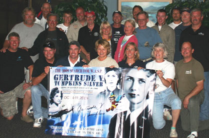
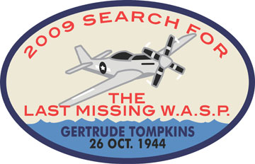

|
The Search for a Missing WW II Heroine: WASP Gertrude Tompkins by Llewellyn Toulmin
Gertrude "Tommy" Tompkins sat in the cockpit of her P51D Mustang, the most powerful fighter plane in existence in October 1944. She was an excellent pilot, loved flying, and had done well at fighter school, yet was described as "quiet and reserved." She was a member of the famous Women Airforce Service Pilots or WASP, who ferried every type of military aircraft over 60 million miles across the country, performing a vital war service. Thirty-two years old, she had only been married a month. She was 5' 9" tall, with brown hair with white streaks, and was wearing her WASP flight suit. She revved the engine, released the brake, and rolled down runway 25R at Mines Field, later to be called Los Angeles International Airport. She lifted off and disappeared into the afternoon fog bank that lurked offshore, over Santa Monica Bay.
She was never seen again. She is the last missing WASP.  Sixty-five years later, in 2009, a team of divers, explorers and relatives set out to find Tompkins and her plane. I was privileged to be among them. The Gertrude Tompkins Expedition was led by members of the Missing Aircraft Search Team " MAST " which was formed in the wake of the Steve Fossett disappearance. MAST members helped close that famous case, and went on to help solve the disappearance of Cessna N2700Q in Arizona. When historian Pat Macha of Aircraftwrecks.com invited MAST to work on the Tompkins case, which he had been researching for over a decade, we had to take up the challenge.Gertrude Tompkins had conquered stuttering and shyness, learned to fly during peacetime, volunteered for war service, was one of only 1080 women chosen out of 25,000 applicants for the WASP, and was one of only a few WASP selected to go on to fighter "pursuit" school. She was the astronaut of her era. In July 2009 it was announced that the WASP would receive a Congressional Gold Medal for their service in World War II. Who could resist a story like that? MAST started by researching the case and documenting every aspect of it. As lead researcher, I obtained the US Army Air Force accident report " 120 pages long " and learned that there were only a few known facts: Gertrude had taken off between 3:15 pm and 4:00 pm on 26 October 1944; she had been delayed by repairs to the plane's canopy; she was bound for Palm Springs, en route to Newark, NJ; and an eye-witness had seen three P-51s take off close together, including hers, and had seen only two come back over the field headed for Palm Springs. Only one WASP was interviewed in the report. Dorothy Hopkins stated that she took off ahead of Tompkins, flew straight up through the fog bank, and broke out of the instrument conditions at 2500 feet. She looked around, got her bearings from mountain peaks, turned left 180 degrees, and headed east for Palm Springs. Most of the rest of the accident report detailed the massive land and sea search for Gertrude. Tragically, due to a paperwork foul-up, the search got under way four days late. No trace was found. MAST formed a working group of experts from around the country that met via telephone and posted our research on-line on a private site at Yahoo Groups. We worked on the case for almost a year, from November 2008 through October 2009. I was able to use information in the accident report and lists of WASPs and ferrying pilots to identify several WASP pilots who were apparently present the day of the disappearance, and who had never been interviewed before about the accident. I was able to track down three of these intrepid ladies, now in their 80s and 90s. They said that when Tommy took off, she likely turned left immediately, to minimize her time in the fog bank. But it was possible that she flew straight out and climbed, to try to break out of the fog, like WASP Dorothy Hopkins ahead of her. One WASP said she always turned right at Mines Field, since the coast was closer that way. So our search area was about 25 square miles off LAX, west, north and south of runway 25R. We re-interviewed a possible witness, Frank Jacobs. He stated that he was a youth, fishing on a pier south of the airport in October 1944, when he saw a plane leave Mines Field, head out over the water, and then do a wing-over and head straight down into a fog bank, apparently crashing. We took him back to the pier to re-create what he saw, and factored his statements into our scenario building. We learned that the Mustang P-51-D had a possible weakness that lent some credence to the Jacobs report. This plane had a large gas tank just behind the pilot that could negatively affect the center of gravity of the plane, and cause a spin if the pilot yanked back on the stick. Unfortunately, the Tompkins case contained a major red herring. In a book about the WASP called On Silver Wings, author Marianne Verges stated that the body of Gertrude Tompkins had been found in the mountains outside of LA in the mid-1980s, in her crashed Mustang, wearing her engagement ring "and her dog tags." As a civilian, non-military flier, WASP Tompkins was not issued an official dog tag. And Verges provided no proof or citation for this surprising story. We tried to verify the account, but Verges was deceased and her surviving family could or would not supply any notes or documentation. So I interviewed numerous WASPs and determined that some WASP created their own unofficial dog tags during the war, and wore them. Team members combed the files of newspapers and the Coroners Offices of the two relevant counties, and found no trace of a Jane Doe or the wreck of a Mustang. We finally dismissed the Verges story as an unfortunate error. We then utilized a three step method to look for the plane. First, Gary Fabian of the famous UB 88 team, which had found the only sunken German submarine off the California coast, obtained a USGS underwater digital map of Santa Monica Bay, and secured donated access to software costing $50,000 to analyze it. He found over 65 anomalies in the 60 square miles of underwater map. Each anomaly was a small cluster of pixels on an otherwise featureless mud and sand bottom. He sent local UB 88 divers, who had been searching intermittently for the plane for over two years, to identify the anomalies. They were able to clear about ten, leaving 55 to be resolved by the Gertrude Tompkins Expedition. Second, it was vital to further analyze those mysterious pixels before sending divers down. Side scan sonar experts Gene and Sandy Ralston stepped forward to undertake this task. They had been traveling all over North America for seven years on a voluntary basis, and had found over 60 drowning victims. No-one else was undertaking this sad but necessary task. They had been called in by authorities and searchers to work on the tragic Laci Peterson disappearance in California and the famous Natalie Holloway case in Aruba. They scanned most of the 55 sites in Santa Monica Bay, and allowed the divers to prioritize their dives and rule out some sites that were clearly not aircraft. We also factored in our scenarios of what path Gertrude might have taken, and the Jacobs report, into account in our prioritization. Third, the dive team was assembled, including some of the top divers in the US. The team was headed by the legendary Mike Pizzio, an expert diver from the FBI. He and most of the ten divers used closed circuit rebreathers (CCRs), a $10,000 system that allows dives down to 400 feet, far beyond the reach of typical sport divers. The divers, working in two person teams, hit all 55 sites in just a week in October 2009, a remarkable achievement.  Back on land, over 40 volunteer support personnel were required to keep the Expedition going. These included boat owners, who donated the services of their boats to the cause, boat crew, communications personnel, public relations staff, cooks, logisticians and diver handlers. These latter were needed on each boat to help the divers get in and out of the vessels, and make sure they didn't fall with their 60 pounds of gear. The King Harbor Yacht Club in Redondo Beach donated invaluable space for the effort. Expedition leader Chris Killian rented a huge house near the beach for the divers and support staff, and this became known as "the Bat Cave" since we disappeared there to get away from the press. Robert Hyman of Washington DC did a super job organizing the logistics and food, so that everyone actually gained weight, even though we were working 18 hours a day. Out of pocket expenses were borne by expedition leaders and participants, and everyone volunteered their efforts. If all participants had charged their full rates, the Expedition would have cost over a million dollars.We were honored to have relatives of Gertrude Tompkins, especially her grand-niece Laura Whittall-Scherfee, participate in the Expedition. They had been looking for Tommy for over a decade, and added their expertise on the case and were terrific with logistical support. Laura stated that, "Since we started looking, this Expedition is by far the biggest and best organized effort to date." Results of the Gertrude Tompkins Expedition were mixed. We "cleared" numerous sites with a very high "probability of detection." We found parts of a Cessna that went down in the 1970s, where amazingly both occupants survived a midnight crash into Santa Monica Bay. We found mysterious airplane parts, possibly off a "drop tank" that was used in the 1950s. We found several other sites that may require re-examination. The biggest find came early in the Expedition, when local divers found the remains of a USAF T-33A Shooting Star jet trainer. This jet had disappeared with two USAF Reserve lieutenants on board. The families had been waiting since the 1950s for word on where their loved ones had disappeared, and we were honored to be able to help with closure in this tragedy. But we didn't find Gertrude or her Mustang. In March 2010 I attended the moving Congressional Gold Medal ceremony for the WASP. I saw Gertrude's picture among the 38 WASP who gave their lives for their country, and I heard Congressional and modern Air Force leaders speak about the achievements of the WASP, the first women allowed to fly US military aircraft. I knew then that the search for Gertrude would continue, and the motto of the Missing Aircraft Search Team: "Spes Mos Increbresco" "Hope Shall Prevail" -- would come true one day. * * * Lew Toulmin is a member of the Explorers Club and a Fellow of the Royal Geographical Society. He has led expeditions to the real "Bali Hai" and in search of missing Alabama ghost towns, is a co-founder of the Missing Aircraft Search Team, and lives in Silver Spring. #end# Close this window |